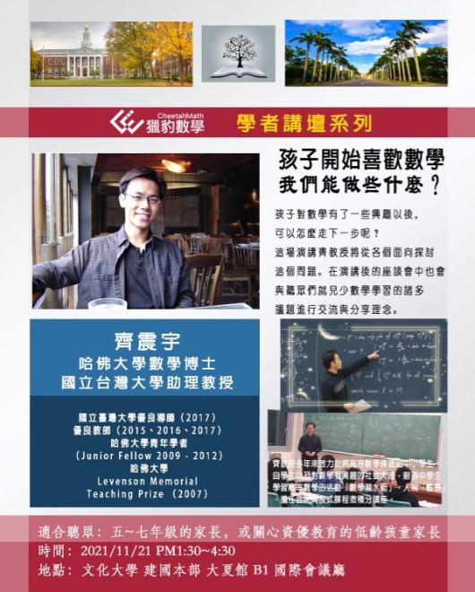

[獵豹學者講壇]
—S系列
臺大齊震宇教授現場演講座談會報名開始!！
S系列適合聽眾：八~十二年級的學生或家長
時間：2021/11/14 PM1:30
地點：文化大學 建國本部 大夏館 B1 國際會議廳
請底下留言+人數(+1或+2):八年級以上學生+一家長，並私訊星媽：「報名11/14現場講座，”參加者姓名”」
費用說明：
務必在星媽私訊的期限內完成填單繳費，逾期不保留名額，為確保報名後到場率，將酌收部分分攤費用。場地、設備租用、茶水費用預計分攤 (多不退、少不補)。
一般身份：NT$200/人
※獵豹現在就讀或完成報名以下班系學生之家長可享優惠：NT$100/人
「奧數班/FS01/S101/S102/J71A/J72A/PK01/PK02/Sci101/Sci102/CMG4/CMP2」
(需完成以上任何一班的報名)
講師車馬費以及上述場地設備茶水費用不足者，由獵豹支付。
全部開立電子發票，請務必留下電子信箱。
https://www.facebook.com/groups/695697124716309/permalink/921950185424334/
—J系列
齊教授，出身台大、哈佛，為華人第一大師--丘成桐入門弟子，學養兼具，這次獵豹邀請齊教授以高觀點俯視初等數學 帶領孩子們悠遊數學世界，是個很難得的機會，獵豹團隊這邊有三位台大博士老師是齊教授的學弟，也都非常推崇齊震宇學長學識豐富，認真教學。
宗翰老師也提出自己以前經驗，老師以前高中時代遇到台大、中研院的精彩演講 ，都是同學結伴去搶位（現場一大堆建中、附中、一女中同學），好的演講提升觀念 、品味，影響終身，受益極大。
若講座和補習班時間有衝突怎麼辦…?
呵！當然翹課去聽演講啊！(一場精彩演講 值得；補習班可以補課）
為了外縣市朋友，講座特別安排在下午，高鐵的台灣一日生活圈很方便！
11/14下午是給八年級程度以上"學生和家長"參加的數學講座，
11/21下午是給關心資優教育的"家長"講座，歡迎踴躍參加，座位有限，額滿為止！
臺大齊震宇教授現場演講座談會報名開始！！
J系列適合聽眾：關心資優屬數學教育的家長
時間：2021/11/21 PM1:30
地點：文化大學 建國本部 大夏館 B1 國際會議廳
私訊星媽：「報名11/21現場講座，”參加者姓名”」
費用說明：
務必在星媽私訊的期限內完成填單繳費，逾期不保留名額，為確保報名後到場率，將酌收部分分攤費用。場地、設備租用、茶水費用預計分攤 (多不退、少不補)
一般身份：NT$200/人
※獵豹現在就讀或完成報名以下班系學生之家長可享優惠：NT$100/人
「奧數班/FS01/S101/S102/J71A/J72A/PK01/PK02/Sci101/Sci102/CMG4/CMP2」
(需完成以上任何一班的報名)
講師車馬費以及上述場地設備茶水費用不足者，由獵豹支付。
全部開立電子發票，請務必留下電子信箱。
https://www.facebook.com/groups/695697124716309/permalink/922603285359024/

當孩子喜歡數學—我們能做些什麼
11/14週日「獵豹學者講壇」在文化大學城區的國際會議廳舉辦，邀請了台大齊震宇教授演講及座談。
演講由獵豹召集人宗翰老師引言開場，齊教授以風趣又別具深意的「創世紀」寓言引出當天演講的主軸—微分拓撲。
透過一些「簡單」的三維曲面的特性，齊教授引入了高等數學中的「微分流形」、「拓撲不變量—尤拉示性數」..等概念，然後引導出Hopf的指標定理!
讓大家見識到數學家如何從「簡單的自然現象」發掘出「深奧的道理」。
演講會結束後，齊教授 宗翰老師在座談會中也與家長、同學做了一個多小時的意見交流。
這真是一場充實豐富的知性之旅！
建中科學班的吳席綸同學（今年建科入學榜首）在演講結束後，特別跑來跟宗翰老師打招呼，感謝獵豹與星媽舉辦這次活動，對他有若醍醐灌頂，收穫良多！
本週日11/21下午齊教授還有一場演講座談會（針對5-8年級父母），精彩可期，千萬不要錯過喔！